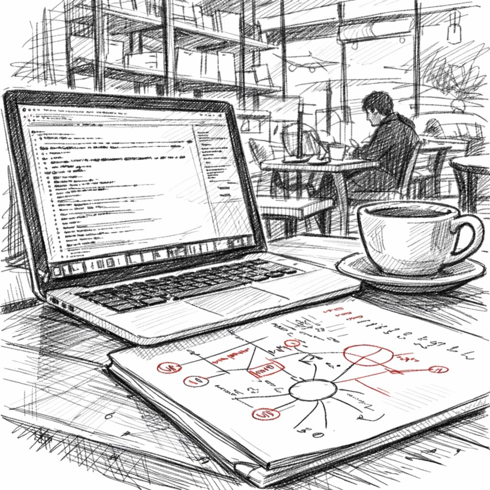

Я отношусь к тому постепенно вымирающему поколению разработчиков, которым выпала странная привилегия писать программный код в его самой чистой, первозданной форме, создавать каждую строчку вручную, собственными руками и головой, без всяких умных копайлотов-помощников, без промптов, без автодополнения, которое якобы знает что ты хочешь написать лучше тебя самого. Голая логика алгоритмов, литры выпитого кофе и мигающий курсор в пустом файле открытой IDE, когда мозг пытается удержать в своей «оперативной» памяти всю архитектуру системы целиком.
И я искренне рад, что прошёл через этот опыт в своё время, что успел застать ту эпоху, когда программирование ещё было настоящим ремеслом, а не управлением автоматическими генераторами кода. В те совсем недавние времена, которые теперь уже кажутся какой-то историей мамонтов, я писал код постоянно: в офисе, дома, когда был под стрессом от мажора, когда был счастлив от решения сложной задачи, иногда во снах продолжал что-то отлаживать и искать баги.
Я делал это не потому что меня кто-то заставлял или потому что так требовало начальство, а просто потому что сам процесс создания работающей системы из ничего, исправление хитрых багов, построение сложных систем из простых компонентов — всё это было по-настоящему весело, приносило какое-то детское удовольствие от созидания. Когда наконец откидываешься в кресле от монитора после многих часов работы, смотришь на то что построил своими руками, и видишь что всё работает как задумано, и думаешь: «Да, я, блин, чертов гений, это всё сделал только я, и никто мне не помогал». Ну разве что SO и немного гуглежки.
Даже пять лет назад не получалось просто механически собирать готовые программные компоненты из библиотек в единую систему, всегда приходилось держать ментальную модель и архитектуру в своей голове, и держать в памяти все взаимосвязи между модулями и прорабатывать граничные кейсы ещё до того, как они возникали бы на практике, симулировать различные варианты отказов ещё до того, как продакшн успеет тебя неприятно удивить в три часа ночи.
И каждый исправленный сложный баг делал меня чуть опытнее, чуть умнее, чуть лучше понимающим как всё работает внутри, получается что я не просто писал очередной код по заданию, а выковывал его в кузнице моего разума, вкладывая в каждый удар молота частичку себя.
Я хорошо помню как встроил в один из наших проектов ecma-песочницу для хот-релоад конфигов, потому что возможностей плюсов не хватало, пришлось переписать как проект, так и саму песочницу — и это было сложно, я по-настоящему гордился этим как произведением инженерного искусства. И этой системой пользуются до сих пор спустя десять лет, и мне есть чем гордиться, просто потому что я построил что-то действительно трудное и элегантное одновременно, и есть такое искреннее творческое удовлетворение от результатов собственного труда, которое очень сложно подделать или симулировать специально.
А теперь давайте перемотаем время на сегодняшний день, в нашу эпоху повсеместного внедрения иишки куда можно и куда нельзя. За последние несколько месяцев активной работы с ИИ-помощниками я произвёл (не написал), сгенерировал больше программного кода, чем раньше писал вручную за целый год работы или даже больше. Формально метрики моих комитов показывают большой рост, и мое руководство лет десять назад, просто бы носило на руках за такие цифры, но внутри я вижу — что что-то идёт не так, потерялось что-то важное в этом процессе, как я пишу код. Странное ощущение, что весь этот код построил не я лично своими руками и головой, а какой-то абстрактный программист, которого наняли на аутстаф. Да, я формально всё это ревьюваю построчно, внимательно читаю, дорабатываю детали, исправляю неточности.
Да, я в целом понимаю что там происходит в алгоритмах, потому что сижу на этом проекте не один год, но весь этот код не рождался из того глубокого когнитивного труда и внутренней борьбы с задачей, которая делала процесс программирования таким творческим. Это теперь похоже на просмотр игр на ютубе, когда кто-то другой проходит за тебя всю сложную часть, побеждает финального босса после десятка попыток и спасает принцессу из заточения, а ты просто сидишь рядом и смотришь в монитор.
Можно даже получить титры с благодарностями в конце и запись о победе в профиле, и даже твоё имя запишет в таблицу рекордов... но ты сам не играл, не чувствовал азарт, не переживал поражения и не радовался победе. И в этом заключается главный парадокс: когда процесс создания чего-то становится слишком лёгким и быстрым благодаря автоматизации, само достижение конечного результата начинает казаться невесомым, ненастоящим, не имеющим той ценности, которую имело раньше.
Есть ещё один важный побочный эффект от массового использования иишки в кодинге, о котором никто не говорит на конференциях и в статьях. То самое знаменитое состояние потока, глубокой концентрации, о котором написаны десятки книг по психологии творчества, и раньше оно приходило само собой в процессе написания сложных программных систем. Можно было пропасть, провалиться на много часов подряд в этот поток, полностью погрузиться в выстраивание логики, в дебаг граничных случаев, в шлифовку мелочей и время переставало существовать, я часто забывал поесть и вторая чашка кофе остывала рядом с невыпитой первой, а за окном уже стемнело.
А теперь достаточно коротко описать иишке в тексте, что именно хочешь получить на выходе и ждать пока модель генерирует ответ, неизбежно отвлекаясь на что-то постороннее, потому что мозг не любит простоя, параллельно проверяя сообщения в телеге или бездумно листая ленту. Когда я сам печатал весь код на клавиатуре своими пальцами, мои мозг и руки были синхронизированы между собой, сама физическая борьба с задачей, преодоление трудностей и реализации постепенно кодировала, записывала всю систему глубоко в подкорку, в долговременную память, в понимание предметной области. Иишка убирает всё это полезное трение из процесса разработки, но именно это трение, эта борьба с материалом и было тем самым главным механизмом глубокого кодирования знаний у программиста, превращения информации в понимание и опыт.
И вот что стало для меня самого настоящей неожиданностью, чего я совершенно не ожидал обнаружить, сам процесс набирания кода на клавиатуре раньше был по-своему приятен, доставлял какое-то тактильное удовольствие. Разные клавиатуры с разным ходом клавиш или щелчком, по разному влияли на процесс построения игровой логики в программе, просто физический ритм самого процесса мышления, передающийся через движения рук влиял на то, как быстро я решал задачу. Теперь намного проще описывать желаемый результат абстрактно, вместо того чтобы конструировать его самому шаг за шагом из элементарных кирпичиков, но описывать конечную цель на словах будет совершенно не то же самое, что самому строить путь к ней. А именно в самом процессе строительства, в преодолении трудностей и жила вся радость творчества, весь кайф от работы программиста.
А еще несколько недель назад, что-то опять поломалось в нашем проде из-за последних изменений, которые вносили с помощью иишки. Старый я, который писал всё сам, знал бы интуитивно и точно куда именно смотреть в коде при таком типе ошибки, и как быстро починить проблему минимальными изменениями. Но этот код писал не я, и его писал даже не программист, и пришлось буквально перечитывать построчно с нуля всю программную систему, и это был совершенно чужой код, не в нашем кодстайле, без нашего ревью (это отдельный вопрос как код пролез через ревью), написанный незнакомым «человеком» на другом конце света. И осознание того факта ударило меня гораздо сильнее психологически, чем сам технический баг и его последствия для игроков.
Когда код, написанный лично твоими руками после долгих размышлений, внезапно падает с ошибкой в проде под нагрузкой, то в твоём мозге уже давно существует подробная мысленная карта всей системы, подробная модель архитектуры. Можно быстро сориентироваться в ситуации, понять что именно пошло не так, и получается отлаживать код почти интуитивно, на автомате, физически помня где проблема, потому что весь кодбейз когда-то прошёл через твой мозг в процессе создания, а не только через глаза при поверхностном ревью. Этот код приходилось мысленно симулировать в разных сценариях, бороться с ним при отладке, буквально жить какое-то время внутри этой системы и думать её категориями. А теперь, если что-то ломается в коде созданном с помощью иишки, приходится идти и читать строку за строкой, не потому что ты вдруг разучился программировать или стал глупее, а просто потому что ты не впитал этот код достаточно глубоко в себя при его создании.
Существует принципиальная когнитивная разница, огромная пропасть между тремя разными вещами: самому написать код с нуля, затратив на это умственные усилия; внимательно проревьювать уже готовый чужой код на предмет ошибок; и просто понять в общих чертах что делает код при беглом чтении. И мы сейчас сдвигаемся от первого варианта к третьему варианту в этом спектре, и этот фундаментальный сдвиг в способе работы радикально меняет ту глубину, с которой профессиональное знание становится частью тебя самого.
Я сейчас не жалуюсь на судьбу и не ругаю прогресс, а просто наблюдаю со стороны и фиксирую происходящие изменения, пытаюсь их осмыслить. Я вовсе не против самого существования и использования иишки в работе, это было бы глупо и бессмысленно. Я был свидетелем расцвета классического программирования, может и не золотого века кода 90-х, но мне тоже выпала историческая привилегия писать программы вручную в самой чистой форме этого ремесла, без всяких помощников и костылей, и я искренне рад что успел пройти через этот опыт, что он у меня есть в багаже. Теперь я одновременно вижу и понимаю куда всё это движется дальше.
ИИ-помощники в программировании никуда не денутся и не исчезнут, как бы кто-то ни сопротивлялся. Они будут становиться только лучше с каждым месяцем, быстрее генерировать код, будут более автономными в решении задач, будут требовать всё меньше и меньше участия человека в процессе. Но при этом сами правила игры в профессии программиста фундаментально изменились буквально за пару лет, и может быть, наша новая роль в этом изменившемся мире больше не заключается в том чтобы печатать код быстрее конкурентов и коллег, быть самым производительным по количеству строк в день.
Может быть, истинное мастерство программиста теперь в другом — в способности лучше других проектировать архитектуру сложных систем на высоком уровне абстракции, задавать точные вопросы о требованиях, проектировать более глубокие и продуманные системы учитывающие будущее масштабирование, яснее понимать неизбежные компромиссы между разными качествами системы, по-настоящему владеть принимаемыми архитектурными решениями на уровне глубокого понимания а не просто владеть конкретными строками кода которые можно в любой момент переписать.
Профессиональное мастерство программиста эволюционирует вместе с инструментами, и это нормальный процесс, но надо подходить к этой эволюции осознанно, понимая что мы теряем и что приобретаем в процессе, потому что если мы полностью и безоговорочно откажемся от ручного строительства систем, делегируем всё кому-то другому, мы вполне можем случайно и незаметно отказаться заодно и от той самой радости строительства, от того удовольствия от созидания которое и делало профессию привлекательной для творческих людей, а не просто способом зарабатывать деньги.
Мне этот переходный момент в программировании ощущается некомфортно и тревожно именно потому, что я нахожусь в самой середине переходной эпохи между двумя парадигмами работы. Те разработчики моего поколения, которые писали абсолютно всё вручную много лет подряд, тоже видят этот сдвиг в профессии острее и болезненнее всех остальных. Иногда я ловлю себя на странной мысли что я уже звучу как старый дед-ворчун, который рассказывает молодёжи занудные истории о «добрых старых временах» программирования, когда мы писали код до двух часов ночи просто ради удовольствия от процесса. Новое поколение, которое вырастает уже с ИИ-помощниками, возможно никогда в жизни не испытает того же самого чувства удовлетворения от ручного создания системы, но они вполне вероятно испытают какое-то другое, своё удовлетворение от работы на более высоком уровне абстракции.
Пытаюсь разобраться в себе как использовать эти новые инструменты эффективно, при этом не потеряв себя как специалиста и в процессе трансформации, превратившись в простого оператора чужих систем. Я все еще пишу большую часть кода руками, не только потому что мой контракт явно запрещает мне использовать ИИ для кодинга, но потому что мне нравится писать код руками и своей головой. Но в компании уже открыли доступ иишке для анализа багов и ревью входящих комитов.
← Все статьи